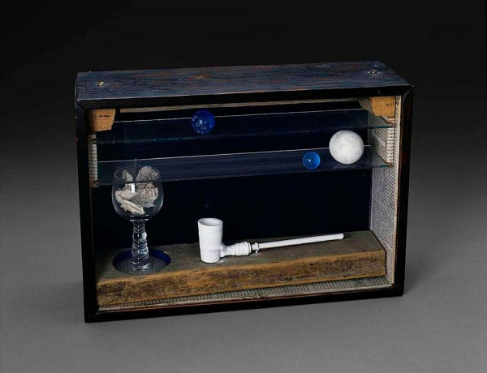

-
Nostalgia Box
by Chris Reitz September 16, 2011

Dime-Store Alchemy, originally published in 1992, (and republished next week by NYRB Classics) is a collection of prose fragments tasked with the poetics of self-portraiture. It is a particularly monumental task given that its author, Charles Simic, is a Poet Laureate and the celebrated author of dozens of collections of poetry, half as many translations, and a handful of collections of prose. In the preface, Simic describes the collected fragments as an exploration and coming to terms with the working method of Joseph Cornell, a somewhat lesser-known participant in American surrealism who assembled disparate found objects in frames of his own making. Imitating Cornell’s method, Simic plays at a prose version of collecting and framing, shuffling moments in the life and work of the artist “until together they [compose] an image that [pleases] him” (x). Yet at its core, the collection chronicles the struggle between a popular poet and his complex historical inheritance. Simic, after all, is a Serbian import, and although he is a major fixture in the landscape of contemporary American poetry, his work is the product of an ongoing struggle to reconcile that identity with its Balkan, European, and American precedents. In Dime-Store Alchemy, Simic attempts this reconciliation in the unlikely figure of Cornell — not through a synthesis of historical traditions, but through an accumulation of fragments of their detritus. It is in the dime-store, where cheap novelty items and daily essentials sit side by side, their only commonality a five-cent price tag, that Simic makes his fragmentary acquisitions.
Joseph Cornell, who serves as the poet’s alter-ego, is himself a misplaced modernist. Unlike Simic, Cornell was born in the US; however, he participated in a thoroughly European avant-gardism. Surrealism was a French import, and the practice of assemblage and collage that pre-dated his working method was of European dada origins. Simic writes of Cornell as if he is on the periphery of multiple modernisms, constantly shifting between the burden of a Parisian modernist debt, the lonely hermeticism of a basement studio in Queens, and the crowded alienation of a 1930’s Manhattan street.
The first section and a half of fragments (that is, half the book) finds itself on the losing end of these struggles with periphery. The first section in particular, “Medici Slot Machine,” returns again and again to the milieu of Nineteenth Century Paris. Each of the obligatory touchstones is fondled: Poe’s “Man of the Crowd” is summarized in “The Romantic Movement,” Baudelaire speaks of the magic in the city in “A Force Illegible,” and the machine — that great beast of modernity — appears throughout (“The vending machine is a tattooed bride,” (28); “The machine, like any myth, has heterogeneous parts” (29); “The city is a huge machine” (30)). Even the prostitute makes an appearance (28). The whole of this section feels at home in a Benjamin-on-Baudelaire Paris Street, though one painted in broad strokes and populated by Cornell and Simic dressed as Flâneur and ragpicker.
Simic seems aware of the problem, but also wholly unequipped to solve it. For example, early in section two, titled “The Little Box,” the poet muses that an uninformed viewer of Cornell’s personal effects might take them to be “the strangest trash imaginable, for there are things in it that could have been discarded by a nineteenth-century Parisian as well as the twentieth-century American” (37). The poet, of course, might equally be that twentieth century American, and it is unclear why his garbage continues to look the way it does. Yet for all its nostalgia, the first section of the collection manages to bind the artist with the poet in appreciable ways. Simic describes Cornell as a realist, one who’s sorting, collecting, and framing of reality ultimately renders it surreal. Simic’s poetry, particularly in this volume, follows the same course. His fragments collect material from New York Streets and situate it in a series of nesting frames. In the poem “Medici Slot Machine,” for example, Simic writes of vending machines filled with mirrors that turn into reflective containers for a collection of “panhandlers, small-time hustlers, drunks, sailors on leave, [and] teen-aged whores loitering about” who then mix with “smells of frying oil, popcorn, and urine” (28). This poem, in turn, is framed by the entire section “Medici Slot Machine,” itself a container of both American surrealism and the version of modernity that looks like nineteenth century Paris. The framing thus expands to contain framing itself — the collectors, framers, collagers and assemblagers of European high modernity. And this is Simic’s gambit. It is the end-game of the collector; the final state of the curio cabinet—the world in miniature, rendered finally surreal. It is not a resolution, but rather a kind of coping strategy; once framed, these fragmented modernisms can be set aside. Simic offers his reader a short poem by Vasko Popa (a Serbian-born poet, like Simic, from whom he borrows the title of section two) to seal the deal:
The little box gets her first teeth
And her little length
Little width little emptiness
And all the rest she hasThe little box continues growing
The cupboard that she was inside
Is now inside herAnd she grows bigger bigger bigger
Now the room is inside her
And the house and the city and the earth
And the world she was in beforeNow in the little box
You have the whole world in miniature
You can easily put it in a pocket
Easily steal it easily lose itTake care of the little box.
It is only after the little box is taken care of and put on the shelf — after the struggle with irreconcilable modernisms is put into its own frame to be observed – that Simic’s sympathies for Cornell subside and true homage can take its place. The result is an uncritical return to the stirring verse for which Simic is best known. A somewhat indulgent celebration of the mystical effects of juxtaposing unrelated words, images, and objects ensues — Simic’s take on the magic of assemblage. This happens right before the third section of the book, “Imaginary Hotels,” wherein Simic explores the impossible themes of beauty, art, imagination, and death. And I don’t mind it at all. The poet makes the transition as if no alternative is possible (which may be true). Nothing is resolved, but everything becomes allowable. A necessity, it would seem, for wonderful passages like this:
“Blue is the color of your yellow hair,” said Schwitters. He walked into a forest near Hanover and found there half of a toy train engine, which he then used in one of his collages.
Beauty is about the improbable coming true suddenly. The great ballerina, Emma Livry, a protégée of Taglioni, for instance, died in flames while dancing the role of a night butterfly.